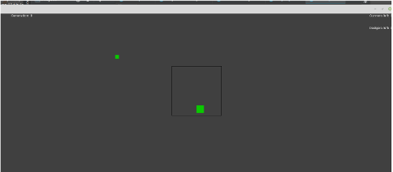
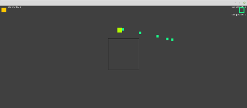

NeuroEvolution of Augmenting Topologies
Throughout my time at RIT I've found that there is more I want to learn beyond what's being taught in my classes. Over Thanksgiving break, I took the time to learn about NEAT, or neuroevolution of augmenting topologies, which is a way to train neural networks by simulating evolution.

First, I wanted someting small, to get my feet wet. I made a simple nerual network to train this small red square to jump over these blue rectangles. It isn't very interesting, but the squares learned, and so did I.
Next, I wanted a more complicated game to train with. I re-created my ShootEmUp game that I worked on a couple years ago, but this time without multiplayer. You can read more about that game here.
Now I had to create the neural network. The first one was overly complicated, with 11 input nodes, and 6 output nodes, along with 6 hidden nodes. The weights for each node were all chosen randomly, and the bots were off!
Their movements were sporadic, and they weren't very good, so it was time to train them. This is where NEAT comes in. Each generation has ten 'players' when the round ends, the most fit players get to live on to the next generation. They breed with other players (first the most fit, then some chosen at random), then mutations are introduced to the new population, to prevent them from stagnating. Over time, the most fit players will pass on the traits which caused them to be so successful - training the nerual network.
A Problem Arose!
This game was not an ideal application for NEAT. Since all the players will eventually evolve to be practically the same, each player will only be able to compete with the current dominant species. Instead of shooting at eachother, the players should have had their fitness based on hitting targets. To remedy this, I created a second type of player, one that only dodges projectiles. Now, one group will evolve to be very good at dodging, and the other will evolve to be very good at hitting. To make it more interesting, I also added a small square - whichever dodger spends the most time in this square, gets to live on to the next generation.
Take a look at these projects on GitHub